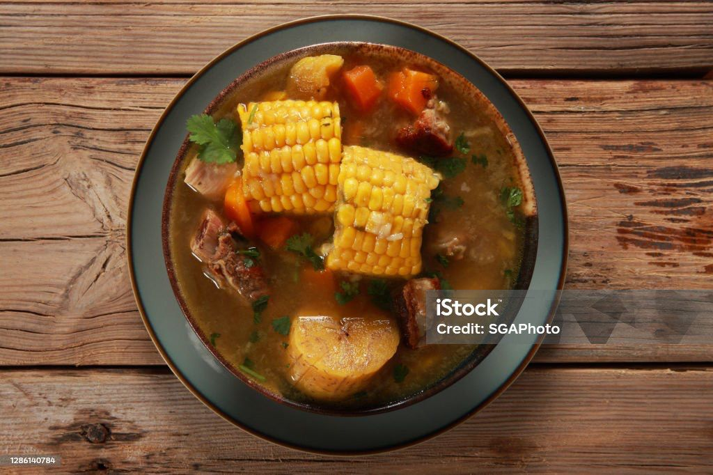
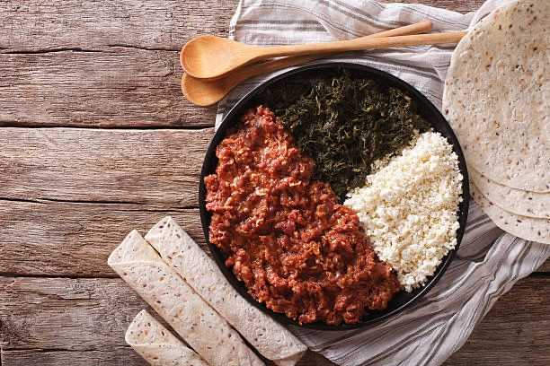
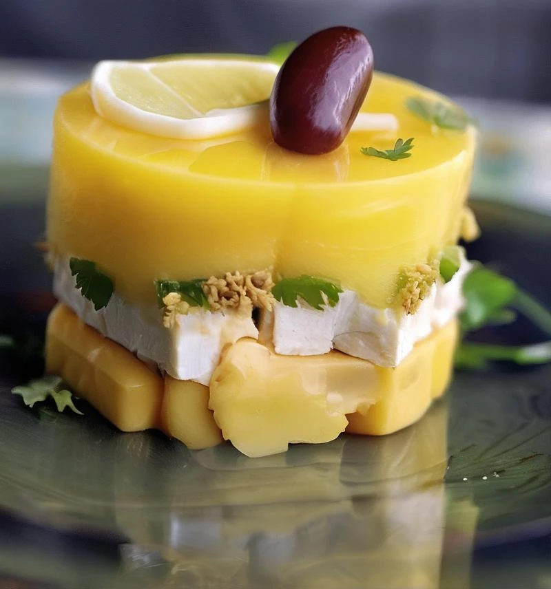
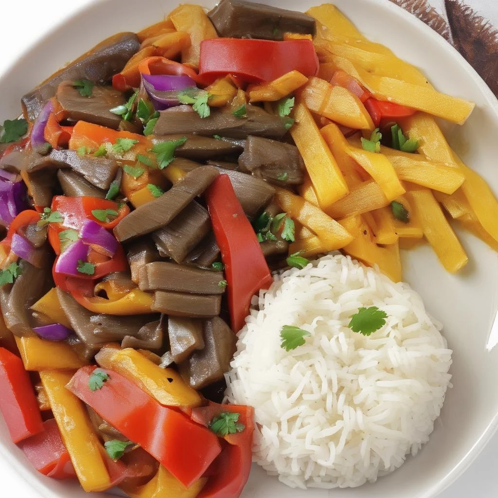

At CEP, each dish is a celebration of culture, tradition, and taste. Our menu brings together the culinary gems of Colombia, Ethiopia, and Peru, offering you a unique opportunity to travel across continents without leaving your seat.
Whether you're craving the bold spices of East Africa, the comforting flavors of the Andes, or the vibrant street food of Latin America, you'll find something here to fall in love with. Every plate is crafted with authentic ingredients and time-honored recipes passed down through generations.
Ready to discover your new favorite dish? Scroll down, explore, and let your taste buds do the traveling.
Colombian Menu

Ajiaco
A comforting chicken and potato soup from Bogotá, flavored with corn on the cob, creamy avocado, capers, and the aromatic guasca herb.

Bandeja Paisa
A generous platter native to Antioquia, featuring grilled steak, chorizo, pork belly, fried egg, rice, red beans, plantain, arepa, and avocado a complete feast.

Colombian Patty
A golden, crispy turnover filled with seasoned ground beef, potato, and spices, served with tangy ají sauce for a perfect bite.

Sancocho
A hearty one-pot stew combining chicken (or beef), yuca, plantain, corn, and other root vegetables—flavored with fresh cilantro and warming spices.
Ethiopian Menu

Kitfo
A traditional Ethiopian dish made of finely minced and mitmita, a chili-based spice blend—served with soft cheese and injera.

Doro Wot
Ethiopia’s iconic chicken stew simmered in a rich, spicy berbere sauce with caramelized onions and hard-boiled eggs—served with injera for scooping.

Injera
A flatbread made from teff flour, served with a thick, flavorful stew made of spiced meats and vegetables—meant to be shared and eaten by hand.

Shiro Wot
A creamy, spiced chickpea or lentil stew, slow-cooked with onions, garlic, and berbere—vegan-friendly and best enjoyed with warm injera.
Peruvian Menu

Aji de Gallina
A comforting Peruvian shredded chicken stew in a creamy, mildly spicy yellow pepper and walnut sauce—served over potatoes and rice.

Causa
A colorful layered dish made from seasoned mashed potatoes, typically filled with tuna, chicken, or avocado—served cold and perfect as an appetizer.

Ceviche
Peru’s most famous dish: fresh fish marinated in lime juice, spiced with ají chili, and mixed with onions and cilantro—served with sweet potato and corn.

Lomo Saltado
A savory Peruvian stir-fry of marinated beef strips, onions, tomatoes, and soy sauce—served with fries and rice for a perfect blend of East and West.